Un buen diseño de contenidos es consistente y coherente, para que los usuarios puedan confiar e intuir como interactuar con él. Hay que prestar atención a los detalles.
Las páginas básicas tienen 3 elementos principales:
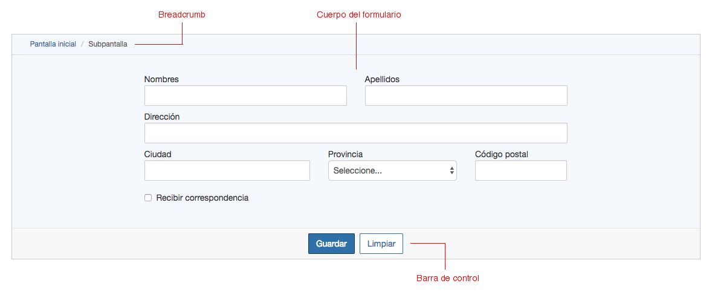
Los formularios generalmente están compuestos con campos de ingreso que se disponen de izquierda a derecha y hacia abajo, se recomienda usar la mejor cantidad de columnas posibles, un número adecuado está entre 1 a 3 columnas.
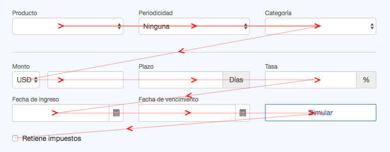
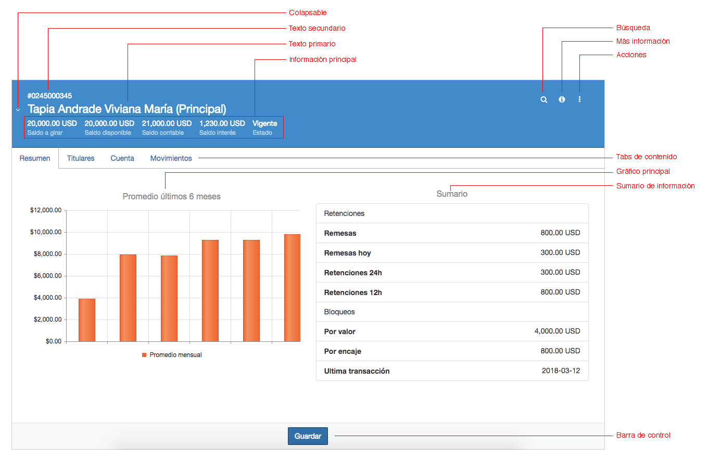
Ayudan a mantener el orden, agrupar contenido, mostrar una pista visual cuando existe jerarquía.
Para obtener los márgenes adecuados es necesario utilizar los contenedores disponibles, estos a través de los estilos se encargan de mantener los márgenes y espacios estándares.
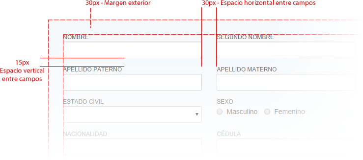
El propósito de los mensajes es mantener informado al usuario de las interacciones que hace con la interfaz, dependiendo de la severidad o el propósito existen 3 tipos:
Los mensajes emergentes se muestran en pantalla de forma modal, es decir, no permiten interactuar con otro elemento de pantalla mientras no se realice una acción sobre el mensaje.
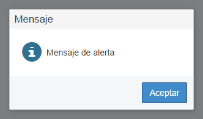
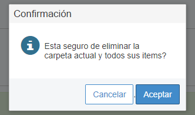
Las notificaciones son mensajes no intrusivos que sirven para informar de alguna acción realizada por el usuario que no requiere interacción.
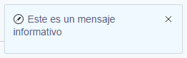
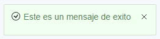
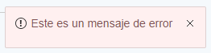
Los mensajes contextuales se muestran en pantalla y permanecen mientras el usuario no los cierre, sin embargo, no bloquean la interacción con otros elementos.
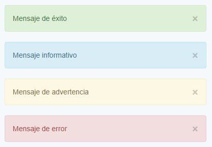
Para asegurar la integridad de los datos ingresados por el usuario se debe aplicar métodos de validación en cliente (esto no reemplaza la validación en el servidor).
Lo primero que se debe validar son los campos mandatorios para hacer un envio al servidor, estos se los identifica con un * de color rojo junto a la etiqueta del campo. Se usa la clase cb-required en el form-group del control y el atributo required en el control.
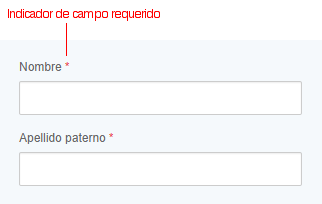
Previo al envío de un formulario al servidor se validan todos los campos y se muestran en rojo los que no han pasado la validación, al tomar el foco un campo se muestra un mensaje que indica porque no paso la validación.
En los casos que se usen contenedores con campos ocultos, como el caso de Tabstrip (link is external), Collapsible (link is external) , etc. Se muestra una pista visual que indique en donde se encuentran los errores.
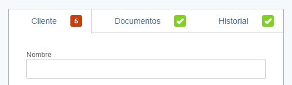
Los elementos comunes se los debe de llamar de la misma forma siempre, por ejemplo: Si utilizamos el término Guardar para indicar la acción de enviar datos a la base de datos para ser almacenados, ese término debe ser constante y no llamarlo a veces Guardar, a veces Transmitir, o a veces Salvar a pesar que la acción es idéntica en los tres casos.
La regla general es evitar abreviaturas, sin embargo, en caso de requerirlo la forma correcta es usar la etiqueta de abreviatura junto con un tooltip que indique el texto completo.
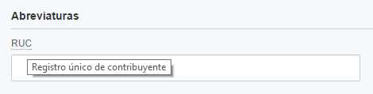
Es imperativo la atención a la calidad del mensaje, incluyendo el tono del texto, teniendo en cuenta que el lenguaje mismo es un ingrediente importante en la satisfacción total del usuario, llegando a usuarios con diferentes niveles de conocimientos técnicos, especialmente los nuevos usuarios.
Las operaciones CRUD son las más comunes, y por estándar vamos a usar siempre los siguientes términos:
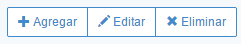
Un popup puede ser de edición o consulta, en el primer caso vamos a utilizar los siguientes términos para las acciones principales:
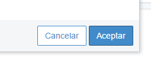
Y en el caso del popup de consulta, vamos a usar:
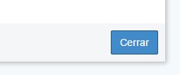
Es el espacio por el cual se desenvuelve el usuario y hace todas sus actividades dentro de la plataforma. El entorno de Cobis tiene un diseño responsivo para que se adapte al tamaño de distintos dispositivos.
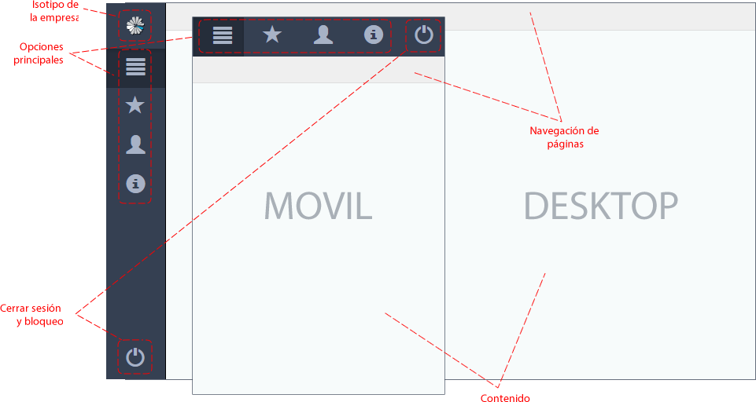
Como elemento de personalización del entorno de trabajo se ha previsto que se pueda utilizar el Isotipo (link is external) (la parte icónica o más reconocible de una marca) de la empresa en la parte superior izquierda de la interfaz, el tamaño de la imagen que se puede utilizar es de 32x32 píxeles.
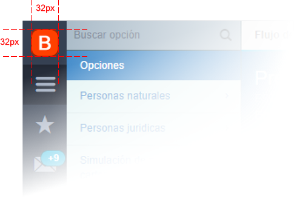